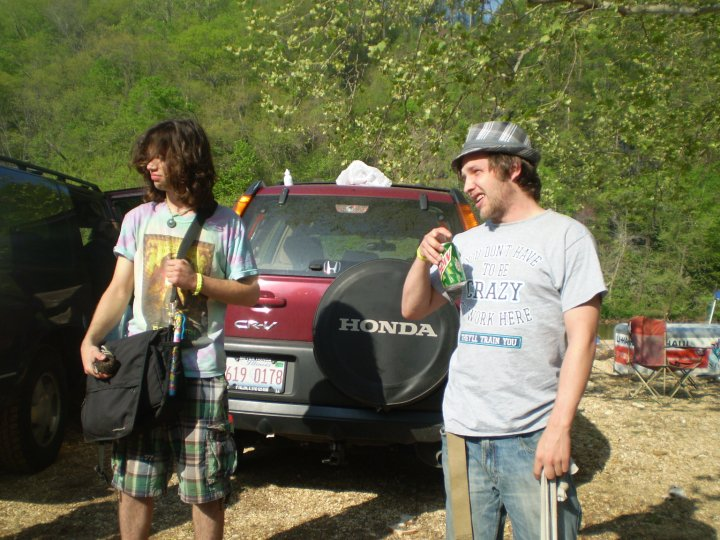
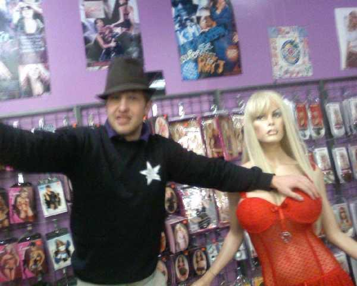

My Formative Years
Life During Highschool
Life After Military
| Life after the military was great! | ||
|---|---|---|
| Festivals!
At camp zoe without a care in the world  |
Performing!
Getting into all the best parties and getting paid to do it 
|
Fun easy jobs!
Sales at Pure Pleasure was one of the most memorable  |
Skills I Have Learned Along The Way
- Discipline: Black belt in Tae Kwon Do, 4 year Varsity Wrestler, and was a senior airman in The Air Force
- Performance: I am proficient in many fire arts including Poi, Double Staff, Contact Staff, Rope dart as well as breathing and eating fire
- Business Management: Ran a successful skincare company that sold over 1.5 million in retail per yea working with stores set up in malls and military bases.
- Sales: since we opened at multple locations I also was required to sell in high pressure situations, and helped a buddy run an online auction business